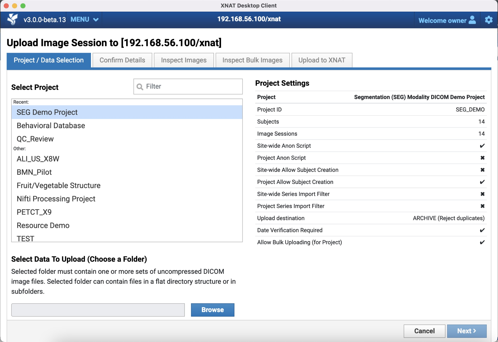
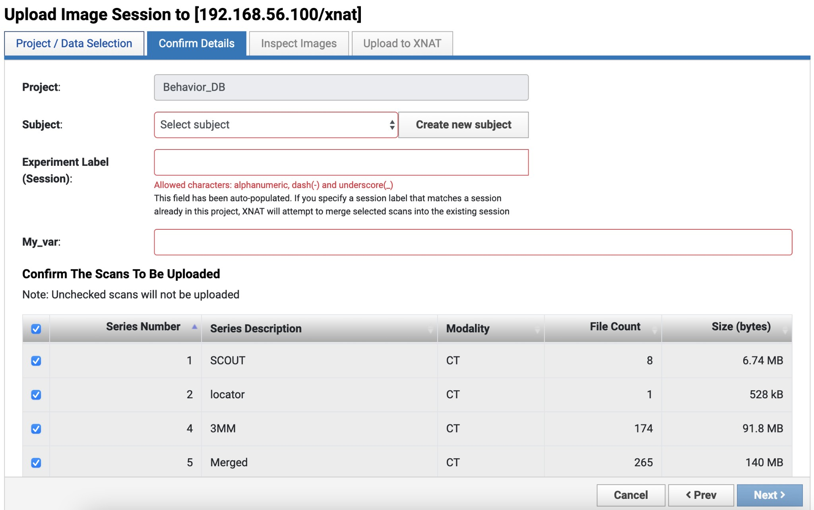

XNAT provides multiple ways to upload research data, each suited for different use cases and data types.
Note
Prearchive vs. Archive:
In XNAT, data typically lands in a temporary holding area called the Prearchive first. Here, you can review, label, and clean up data before committing it to the permanent Archive.
Prearchive: Staging area. Data can be edited or deleted.
Archive: Permanent storage. Data is indexed and protected.
Before uploading, please be aware of the following safety guidelines:
Warning
Overwriting and Merging Data
Uploading data to an existing project or session can overwrite existing files or merge new data into an existing session.
Overwrite: If you upload a file with the same name as an existing file, the old file may be replaced.
Merge: If you upload new scans to an existing session, they will be added to that session.
Always check your project’s upload settings and ensure you are uploading to the correct Subject and Session labels.
Caution
Permissions
Your ability to upload, archive, or edit data depends on your user role and project permissions. If you encounter errors, ensure you have “Member” or “Owner” access to the destination project.
Warning
Data Anonymization
Data from MRI scanners is anonymized at the acquisition step. When uploading data manually (via Desktop Client or Compressed Uploader), ensure that your data is properly anonymized before upload. All personally identifiable information (PII) and protected health information (PHI) must be removed or de-identified according to your project’s requirements.
If the Study Description field contains no routing information or conflicting information, the data will remain in the Prearchive until it is manually routed by an administrator or project member with appropriate permissions.
Note
Manual Routing Required
If your scanner or DICOM sender cannot populate the Study Description field with the routing string, you will need to manually route sessions from the Prearchive after they are received. Contact the XNAT NYUAD administrator if you need assistance with automated routing setup.
The XNAT Desktop Client is a standalone application that provides a robust way to upload large batches of data or complex folder structures. It is recommended for users who prefer a graphical interface with resumable uploads.
Navigate to the project or subject page where you want to upload data. Click Upload Images from the Actions menu. This will automatically open the Desktop Client and log you in using your current web session credentials.
Clicking “Upload Images” from the Actions menu automatically opens and logs into the Desktop Client
Option 2: Launch Desktop Client Directly
Login: Open the Desktop Client and log in with your XNAT credentials.
Start Upload: Click the Upload Images button on the main dashboard.
Select Project: Choose the destination project for your upload. The Desktop Client will retrieve project-specific settings that may affect your upload workflow.

Project and Data Selection screen showing project list, folder selection, and project settings panel
Select Files: Drag and drop your DICOM folders or use the file browser to select them. The client will scan the files to identify image sessions. The selected folder must contain one or more sets of uncompressed DICOM image files, which can be in a flat directory structure or in subfolders.
Single Session Upload Workflow
After selecting your project and data folder, you will proceed to the “Confirm Details” step where you can configure the following options:
Subject Selection: Choose an existing subject from your project using the dropdown menu, or click “Create new subject” if your project allows subject creation.
Subject Label: Ensure this matches your project’s naming convention.
Session Label: The client will auto-generate a session label based on the subject label and other variables. You can override this label if needed. Allowed characters are alphanumeric, dash (-), and underscore (_). If you specify a session label that matches an existing session, XNAT will attempt to merge selected scans into the existing session.
Scan Selection: You can select which scan series to include in the upload using the checkboxes in the scans table. The table displays Series Number, Series Description, Modality, File Count, and Size for each scan. By default, all scans are selected. Unchecked scans will not be uploaded.

Confirm Details screen showing project, subject, and session label fields, along with the scan selection table
Bulk Upload Workflow
If you have multiple image sessions queued, you will be taken to the Bulk Upload Screen. Bulk upload may be restricted for some projects. When available, you can:
Apply standard subject and session labeling patterns
Upload multiple sessions in a single workflow
Note: Some features available in single session uploads (like scan selection) are not available in bulk upload mode until after the upload process
Upload: Click Start Upload. You will be taken to the transfer manager screen where you can:
* Monitor upload progress in real-time
* Pause, resume, or cancel uploads
* Start another workflow while uploads continue in the background
As long as the application is running and you have an active network connection, uploads will proceed in the background.
Some project settings may affect your upload workflow, including:
Allow Subject Creation: Whether you can create new subjects during upload
Upload Destination: Whether data goes directly to Archive or to Prearchive first
Bulk Upload Restrictions: Whether bulk uploads are allowed for the project
Series Import Filters: Which scan series are allowed or blocked
These settings may not be enabled for all projects. If you have questions about project-specific settings or encounter restrictions during upload, contact the XNAT NYUAD administrator.
The Compressed Uploader is a web-based tool for quickly uploading zipped archives of DICOM sessions. This is useful for single-session uploads or when you already have compressed archives.
Supported Formats: .zip, .tar.gz, or .tgz containing DICOM files.
Instructions
Log in to the XNAT web interface.
In the top navigation bar, go to Upload > Images > Compressed Uploader.
Select Project: Choose the destination project from the dropdown menu.
Configure Upload Settings:
* Importer handler: Select “DICOM Zip” for DICOM files.
* Custom Labeling: Choose “Extract From DICOM (Default)” to use DICOM metadata, or “Customize” to manually specify Subject ID and Session Label.
* Subject ID and Session Label: If using custom labeling, enter the desired labels.
* Ignore unparsable files: Check this option to skip files that cannot be parsed.
Select Destination:
* Prearchive: Recommended for safety. This is a temporary holding space that allows you to review and correct metadata before archiving.
* Archive: Direct upload. Use only if you are confident in the data integrity and labels.
Choose File: Click Choose File to select your .zip, .tar.gz, or .tgz file.
After completing an upload, it is important to verify that everything uploaded successfully:
Check Upload Logs: Review the upload logs in the Desktop Client transfer manager or check the upload status in the XNAT web interface to confirm all files were transferred successfully.
Verify Data in XNAT: Navigate to your project in the XNAT web interface and verify that:
* Subjects were created correctly (if new subjects were created)
* Sessions appear with the expected labels
* All scan series are present and complete
* File counts and sizes match your expectations
Retry Failed Uploads: If any uploads failed, you can retry them from the Desktop Client transfer manager or re-upload via the Compressed Uploader.
Contact Support: If anything isn’t working as expected, or if subjects or sessions were not created properly, contact the XNAT administrators at admin.nyuad.xnat@nyu.edu for assistance.
Connection Refused (DICOM Receiver): Ensure you are on the correct network (VPN/Intranet) to access 10.230.12.52. For routing issues, verify the DICOM Study Description field contains xnat://project_id/subject_label/session_label. Missing or incorrect routing strings require manual routing from the Prearchive.
Permission Errors: Ensure you have “Member” or “Owner” access to the destination project. If subject creation is restricted, register subjects in the project before uploading.
Upload Failures: Check file permissions, quota limits, and avoid special characters in Subject/Session labels. Rejected series may be due to Series Import Filters—contact the project administrator if needed.
Labeling Issues: Use only alphanumeric characters, hyphens, and underscores. Duplicate labels will merge data with existing sessions.
Bulk Upload Restrictions: Some projects restrict bulk uploads. Upload sessions individually or contact the project administrator.
Network/Performance: Large datasets take time to upload. Use the transfer manager to monitor progress. Desktop Client supports resumable uploads if connectivity is interrupted.